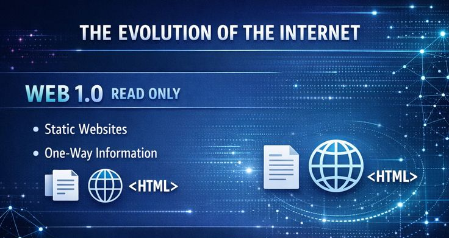

Web 1.0 refers to the earliest stage of the World Wide Web, where websites were static and offered limited user interaction. Web 1.0 worked as the earliest stage of the web, where pages were static and users could only read information. There was little interaction, and websites were simple collections of text and images. It laid the foundation for later versions by proving that global information sharing was possible.
